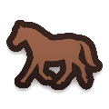
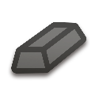
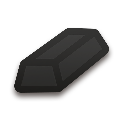
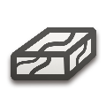
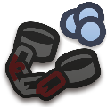
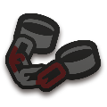
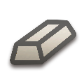

RTR: Imperium Surrectum
RTR: Imperium SurrectumTrade goods
← all regions · region tag reference · wiki index
A trade good is a resource placed on the campaign map at a fixed spot. Whoever holds the region around it has it, and it does three things: it is worth trade income, it may let the settlement build something, and it may let the region raise troops nobody else can.
RIS declares 46 of them. 42 are placed on the map — 5,547 markers in total, and between them they reach every one of the 1,311 regions, because one of them is on all of them. The other 4 are declared but placed nowhere at all.
5 have nothing in the mod conditioned on them: Slaves, Textiles, Village, Old Shipwreck, Aqueduct. That is a finding, not a gap — each of those pages says which other files were searched before the claim was made.
Where these answers come from, and what an unestablished effect means
What a good does is read off the clauses the mod conditions on it — a requirement on a building level, on a numeric effect, or on a recruitment line, including the ones reached through the building file's own aliases. Negated clauses count: withholding something is an effect. Where nothing in the mod conditions on a good, the page says no effect established rather than describing what the word suggests.
Reading the table: tier and trade value are the good's own declared numbers — tier its rank, trade value what a unit of it is worth in trade. 4 goods have their tier line commented out in the mod file and show —, which means not declared, not zero. Regions is how many regions have it; quantity is those markers' amounts added up, which is the number that varies, since a good is placed at most once per region (the single exception in the whole file is Slaves, which has one region carrying two markers).
| Good | Kind | Tier | Trade value | Regions | Quantity | Builds | Effects | Units | |
|---|---|---|---|---|---|---|---|---|---|
| Amber | traded | 3 | 3 | 42 | 69 | 3 | 8 | — | |
| Aqueduct | traded | — | 0 | 0 | 0 | — | — | — | |
| Camels | traded | 2 | 1 | 44 | 78 | 3 | 19 | 5 | |
| Coal | mined | 1 | 1 | 32 | 44 | 5 | 11 | — | |
| Copper | mined | 3 | 2 | 125 | 208 | 9 | 15 | — | |
| Cotton | traded | 3 | 1 | 40 | 65 | 3 | 13 | — | |
| Dates | traded | 2 | 1 | 66 | 124 | 3 | 13 | — | |
| Dyes | traded | 3 | 1 | 85 | 141 | 3 | 4 | — | |
| Elephants | traded | 4 | 1 | 31 | 57 | 3 | 26 | 5 | |
| Fish | traded | 1 | 1 | 181 | 333 | 3 | 9 | — | |
| Flax | traded | 2 | 0 | 107 | 193 | 6 | 23 | — | |
| Fruits | traded | 3 | 1 | 157 | 270 | 2 | 32 | — | |
| Gemstones | traded | 5 | 3 | 73 | 125 | 4 | 8 | — | |
| Glass | traded | 3 | 2 | 50 | 82 | 4 | 8 | — | |
| Gold | mined | 5 | 3 | 110 | 157 | 6 | 20 | — | |
| Grain | traded | 2 | 1 | 249 | 410 | 8 | 58 | — | |
| Grapes | traded | 3 | 1 | 172 | 310 | 4 | 22 | — | |
| Hemp | traded | 2 | 0 | 74 | 120 | 3 | 24 | — | |
| Honey | traded | 2 | 1 | 117 | 192 | 4 | 26 | — | |
 | Horses | traded | 3 | 1 | 137 | 272 | 4 | 30 | 98 |
| Incense | traded | 5 | 3 | 38 | 83 | 4 | — | — | |
 | Iron | mined | 3 | 1 | 137 | 222 | 9 | 19 | — |
 | Lead | mined | 3 | 1 | 63 | 102 | 6 | 12 | — |
| Livestock | traded | 3 | 1 | 283 | 465 | 7 | 74 | — | |
 | Marble | traded | 4 | 2 | 44 | 89 | 3 | 2 | — |
| Old Shipwreck | traded | — | 0 | 0 | 0 | — | — | — | |
| Olives | traded | 2 | 1 | 125 | 228 | 4 | 22 | — | |
| Papyrus | traded | 3 | 1 | 24 | 42 | 4 | 25 | — | |
| Perfumes & Medicinal Herbs | traded | 2 | 1 | 126 | 252 | 3 | 19 | — | |
| Pitch, Bitumen & Tars | traded | 2 | 0 | 85 | 142 | 3 | 15 | — | |
| Pottery | traded | 2 | 1 | 126 | 213 | 3 | — | — | |
| Purple Dye | traded | 5 | 3 | 34 | 50 | 4 | 4 | — | |
| Salt | traded | 3 | 2 | 157 | 289 | 4 | 31 | — | |
| Sheep | traded | 2 | 1 | 251 | 456 | 3 | 36 | — | |
| Silk | traded | 4 | 3 | 78 | 124 | 4 | — | — | |
| Silver | mined | 5 | 3 | 89 | 133 | 6 | 23 | — | |
 | Slave Trade | traded | 4 | 2 | 99 | 134 | 3 | 36 | — |
 | Slaves | slaves | — | 1 | 1,311 | 1,312 | — | — | — |
| Spices | traded | 5 | 3 | 75 | 128 | 3 | — | — | |
| Stone | traded | 2 | 0 | 117 | 216 | 3 | 2 | — | |
| Sulphur | traded | 2 | 1 | 35 | 58 | 3 | 40 | — | |
| Textiles | traded | 2 | 1 | 0 | 0 | — | — | — | |
| Timber | traded | 3 | 1 | 176 | 311 | 3 | 13 | — | |
 | Tin | mined | 4 | 1 | 31 | 51 | 6 | 6 | — |
| Village | traded | — | 0 | 0 | 0 | — | — | — | |
| Wild Animals | traded | 3 | 1 | 150 | 267 | 3 | 21 | — |
Groups
The mod puts some goods into 15 named groups. None of those 15 names is used as a condition anywhere — every condition in the mod names a single good — so a group is a classification the mod declares rather than a mechanic. 22 of the 46 goods are in no group at all.
all minerals
Gold · Silver · Iron · Tin · Copper · Lead
base minerals
fun
Grapes · Textiles · Purple Dye · Silk
rarities
Purple Dye · Incense · Silk · Amber
agricultural goods
fabrics dyes
Textiles · Purple Dye · Silk
live goods
Slaves · Slave Trade · Wild Animals
ambience
building supplies
healing
homewares
hunting
one god
precious minerals
slaves
How each figure on this page was counted, and checked
- Goods — the non-hidden blocks in descr_sm_resources.txt, found by brace depth with
comments stripped. The block count was checked a second way against the flat pattern the other generators use over the same file; both find 926 blocks, 880 of them hidden.
- Markers and regions — the
resourcelines in descr_strat.txt, each mapped to a region
through map_regions.tga. Every good's region set was then derived a second, independent way from the region each line names in its own trailing comment. The two agree for all 42 placed goods; a good where they disagreed would be shown as n/d here.
- Builds, effects and units — counted from export_descr_buildings.txt, alias indirection
expanded, negated clauses included. The 15 group names were searched for in the same file before the Groups section claimed they gate nothing; 0 appear in it.